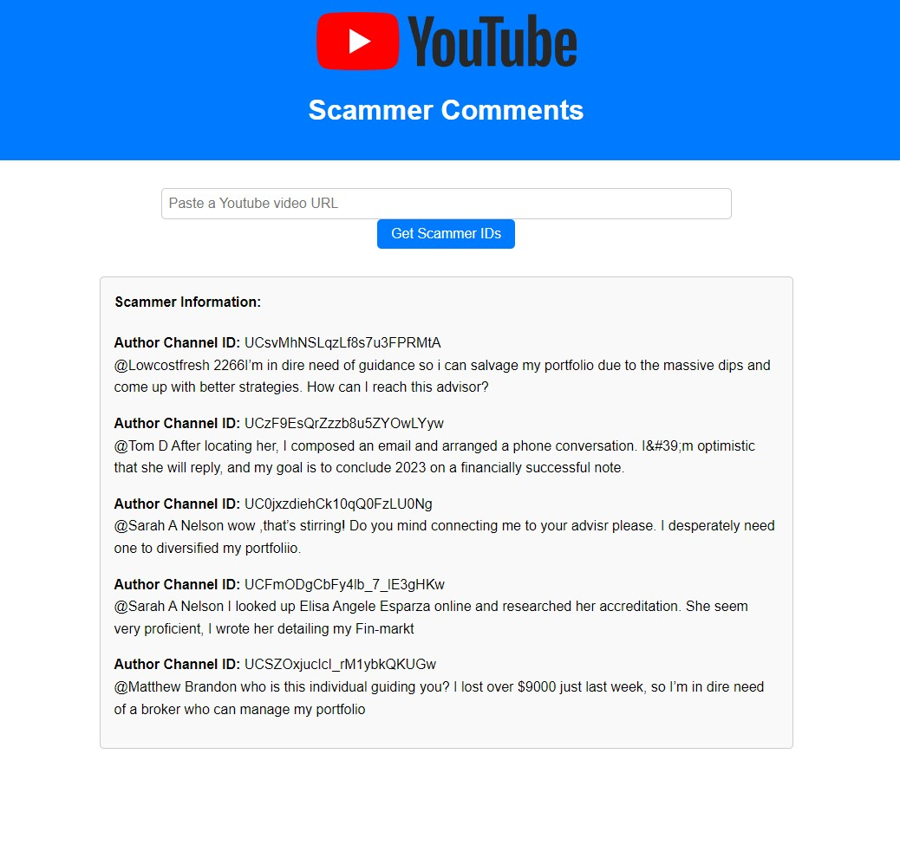
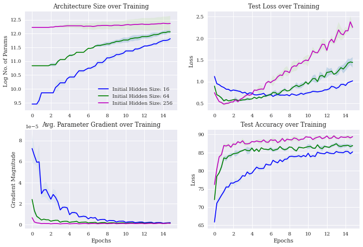
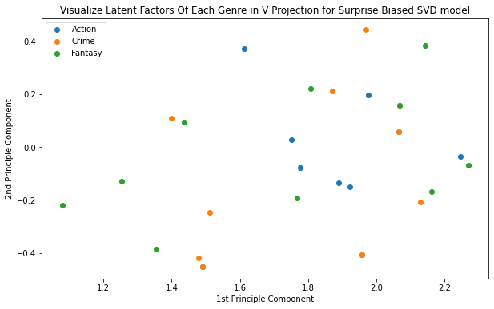
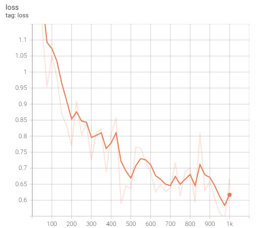
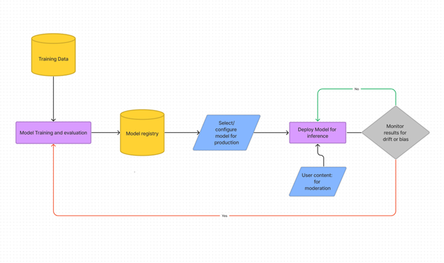

I am a creative machine learning engineer with three years of experience building and testing ML and deep learning models. I have helped companies solve a diverse set of problems by identifying and building the appropriate model, from creating private equity forecasting models with 95% accuracy to spearheading a transition from ML models to LLMs for the company's primary analysis.
In addition to my technical skills, I also have business acumen and education, which I use to provide greater value in my work. I believe that understanding the human/business side of a problem is crucial to improving the quality and usefulness of ML engineering. Often, a more intelligent approach can outperform a more technically advanced one.
With the development of cheaper and more available LLMs, scams originating from bots in YouTube
comments have become more common and difficult to easily moderate. Luckily, LLMs can also be the
solution. To solve this problem, I created this API for collecting YouTube comments and using OpenAI GPT-Turbo to classify them
into scam/spam comments or not. There is also an HTML front end that will allow you to paste a
YouTube video link and get back a list of the users who are likely leaving spam/scam comments and
the comments associated with each spam user.
Here is an example from this video, feel free to check if YouTube’s moderation is as good as mine and see if they have removed the comments yet.

Deciding on the correct architecture to use is often very time consuming and often
a difficult balance between using enough parameters to obtain optimal performance
and not using too many such that overfitting occurs and computational power
is wasted. We have designed a framework to find the optimal architecture for
an application. Our Dynamic Neural Architecture Search uses a Reinforcement
Learning Controller to optimally adjust the network architecture during training.


Using numerical and categorical data with a language model to classify reviews.
It uses the multimodal_transformers along with huggingface libraires to classify
amazon reviews based on numerical/categorical data and text.
I trained the language model to predict the star rating
given in the review. This example is designed to be very easy to modify to
run on another dataset for learning or practical use.

Singular Value Decomposition (SVD) can be used to learn the relationship between two groups.
Then the learned patterns can be used to predict interactions between a new member of either
group and the other group members. Here we use SVD to learn the relationship between viewers
movie ratings and the movies themselves. This allows us to predict how a view will feel about
a movie based on previous responses.

Using numerical and categorical data with a language model to classify reviews.
It uses the multimodal_transformers along with huggingface libraires to classify
amazon reviews based on numerical/categorical data and text.
I trained the language model to predict the star rating
given in the review. This example is designed to be very easy to modify to
run on another dataset for learning or practical use.

End-to-end non-distributed and distributed training for content moderation on AWS. I used the
Hugging Face transformers and datasets library together with a custom
Amazon sagemaker-sdk extension to fine-tune a pre-trained transformer for multilabel
text-classification
on a single or multiple-gpus.
We tried implementing a variety of models to predict fire type, starting with a simple random
forest and decision tree
model; followed by adaboost and neural networks. The initial simple models were able to classify
with 55%. The neural network also performed poorly and we de-
termined it was not an ideal model given the limited number of input variables and the lack of
complexity.
Finally, we decided a decision tree with gradient boosting would be ideal for sorting
categorical data with
fairly limited number of variables. To implement this model we used Light GBM because it trains
quickly
and it we knew we would re-run the model many times in the tuning process.
This paper proposes that a rational investor would set her reference point based on her
expectation of
the growth or future value of the asset, rather than the purchase price. When selling,
traders will receive an additional utility based on the difference between the trader reference
point
and current price of the stock, which is the primary non-rational behavior in this model.
Realization
utility is supported by Frydman (2012) and I propose this realization utility could me more
accurately
modeled as an internal reaction to the belief that the investor accurately set price targets,
so investors would still value paper gains.